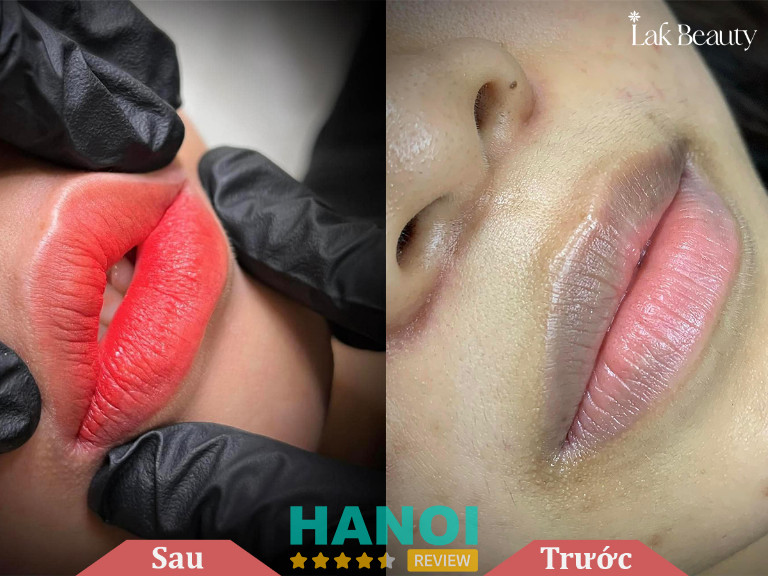
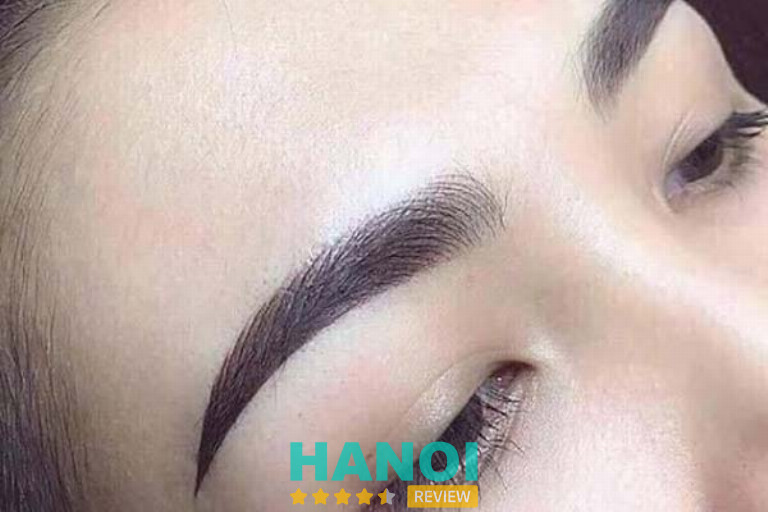
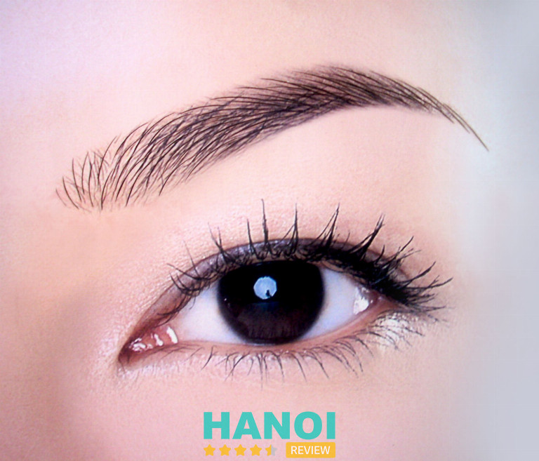
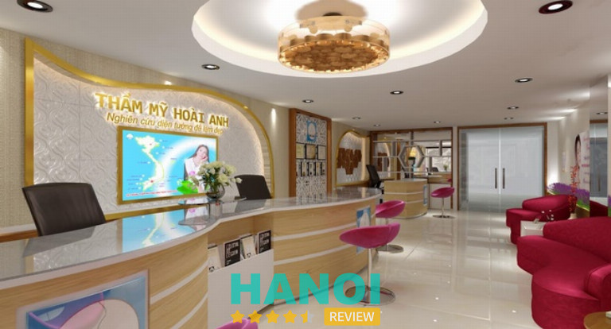
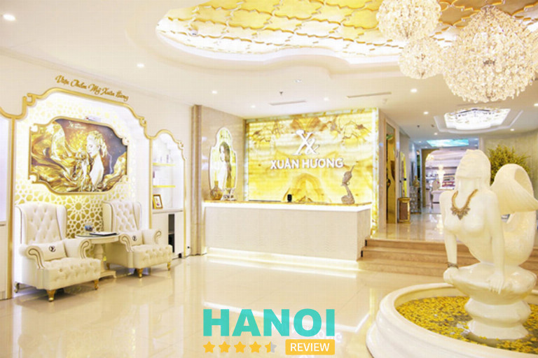
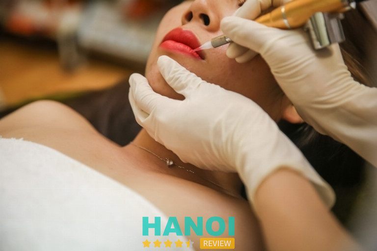

10 Địa chỉ phun xăm thẩm mỹ tại Hà Nội đẹp, mực xịn, giá tốt
Tìm đến các địa chỉ phun xăm thẩm mỹ tại Hà Nội là lựa chọn hoàn hảo dành cho các chị em đang có nhu cầu tân trang nhan sắc. Mảng dịch vụ này không tồn tại nhiều rủi ro lớn như phẫu thuật nhưng quá trình chọn lựa bạn cũng nên xem xét kỹ lưỡng, tránh gặp phải những cơ sở kém chất lượng dẫn đến tốn kém nhiều chi phí mà không nhận được kết quả như mong đợi.
Nếu đang có nhu cầu làm đẹp theo phương pháp này nhưng còn băn khoăn không biết đâu mới là địa chỉ phun xăm thẩm mỹ đẹp ở Hà Nội thì bạn đọc nên tham khảo ngay 10 gợi ý sau đây:
Top 10 Địa chỉ phun xăm thẩm mỹ ở Hà Nội đẹp nhất
Phun xăm thẩm mỹ là phương pháp làm đẹp phổ biến được nhiều chị em ưa chuộng nhất hiện nay. Nó được thực hiện bằng cách sử dụng một thiết bị phun đặc biệt có gắn đầu kim nhỏ, di chuyển trên bề mặt để đưa mực xăm vào tầng thượng bì của da nhằm tạo màu, tạo hình theo ý muốn.
Phun xăm thẩm mỹ Lak Beauty
Lak Beauty là địa chỉ chuyên cung cấp dịch vụ phun xăm thẩm mỹ đẹp nhất tại Hà Nội. Hoạt động với hình thức chuyên môn hóa cao nên nơi đây quy tụ thế mạnh lớn về cả nhân lẫn vật lực, đủ khả năng triển khai đa dạng nhiều dịch vụ khác nhau từ phun môi, điêu khắc chân mày đến phun thêu chân mày và phun mí mở tròng.
Với mong muốn góp phần kiến tạo cho chị em một vẻ đẹp rạng ngời vượt thời gian, Lak Beauty cam kết mang lại hiệu quả làm đẹp tốt nhất cho khách hàng. Cơ sở này được thành lập vào năm 2021 bởi tâm huyết của một trong những chuyên gia hàng đầu về phun xăm thẩm mỹ ở Hà Nội – Bà Nguyễn Thị Lan Anh.
Bằng tất cả tâm huyết của mình, Bà Lan Anh rất chú trọng đến việc trang bị hệ thống cơ sở vật chất hiện đại, đầy đủ dụng cụ phun xăm cao cấp nhất. Song song đó, Lak Beauty cũng nỗ lực chiêu mộ và đào tạo một đội ngũ nhân sự chất lượng gồm nhiều kỹ thuật viên giỏi, tay nghề cao, giàu kinh nghiệm trong lĩnh vực phun xăm thẩm mỹ.

Ngoài ra, để đảm bảo an toàn tuyệt đối cho sức khỏe khách hàng cơ sở thẩm mỹ này chỉ ưu tiên sử dụng loại mực xăm chất lượng, đã được chứng nhận không gây độc hại cho cơ thể người và có nguồn gốc xuất xứ rõ ràng, do các thương hiệu uy tín sản xuất.
Nhờ dùng mực xăm cao cấp nên không chỉ là cam kết an toàn cho sức khỏe khách hàng mà Lak Beauty còn đảm bảo được màu sắc lên chuẩn, thời hạn sử dụng lâu dài và không xuất hiện các tình trạng như trổ xanh, trổ đỏ. Vì thế dịch vụ tại đây thường được cam kết bảo hành trong thời gian lâu dài.
Giá các dịch vụ phun xăm tại Lak Beauty thường không quá cao, có nhiều phương pháp với đa dạng các mức chi phí khác nhau cho khách hàng lựa chọn theo đúng nhu cầu và ngân sách cá nhân. Liên hệ ngay cơ sở này nếu bạn cần được tư vấn, báo giá hoặc giải đáp các thông tin liên quan.
Thông tin liên hệ:
- Địa chỉ: 47, Ngõ 58 Thanh Bình, P. Mộ Lao, Q. Hà Đông, Hà Nội
- Điện thoại: 0963 324 996
- Email: hotro.lakbeauty@gmail.com
- Fanpage: FB.com/taomautoc.phunxamthammy
- Website: lakbeauty.com
Bệnh viện Thẩm mỹ Kangnam
Kangnam là một trong những hệ thống bệnh viện thẩm mỹ có tiếng nhất tại nước ta. Đơn vị dẫn đầu trong việc cập nhật các xu hướng cũng như công nghệ làm đẹp mới nhất. Dịch vụ làm đẹp tại Kangnam không chỉ gói gọi trong các danh phục phẫu thuật, tiểu phẫu thẩm mỹ mà còn có cả phun xăm.
Điểm nổi bật tạo nên sự khác biệt của các dịch vụ phun xăm thẩm mỹ tại Kangnam đó chính là sự tiên phong trong việc ứng dụng công nghệ cao vào quá trình can thiệp, giúp lên màu chuẩn cho môi, mày và mí nhưng không gây đau đớn cũng như không cần nghỉ dưỡng. Theo đó một số công nghệ phổ biến đang được ứng dụng tại đây sẽ bao gồm:
- Phun xăm Pluscell/ Pluscell Pro
- Phun xăm Nano/ nano vi chạm
Những công nghệ này sử dụng kim Nano siêu nhỏ với diện tích tiếp xúc chỉ 0,01mm để đưa mực vào tầng mô da của khu vực cần xăm. Đặc biệt, quá trình này có có thể được kết hợp với việc chiếu sáng plasma giúp diệt khuẩn và giảm đau, ngăn ngừa viêm nhiễm cho khách hàng.

Dịch vụ phun xăm tại Kangnam được thực hiện theo quy trình bài bản với từng giai đoạn cụ thể. Bước đầu tiên trong mọi liệu trình phun thêu tại đây đều sẽ là kiểm tra đánh giá tỉ lệ khuôn mặt, khảo sát nhu cầu khách hàng, xem xét độ nhạy cảm của da để đảm bảo cho kết quả tốt nhất làm hài lòng mọi khách hàng. Song song đó, bên cạnh sử dụng công nghệ chiếu plasma hiện đại để giảm đau, diệt khuẩn thì cơ sở cũng cẩn thận có thêm bước sát khuẩn môi và ủ tê kỹ lưỡng đảm bảo an toàn cũng như mang đến trải nghiệm tốt nhất cho khách hàng.
Mặc dù là cơ sở thẩm mỹ có tiếng được đầu tư chỉnh chu về cả vật chất lẫn nhân sự, mang đến không gian trải nghiệm dịch vụ đẳng cấp nhưng nhìn chung giá các dịch vụ phun xăm thẩm mỹ ở Kangnam chi nhánh Hà Nội sẽ không quá cao so với mặt bằng chung. Tùy thuộc vào công nghệ sử dụng, loại hình dịch vụ mà chi phí thực hiện tại đây sẽ dao động trong khoảng từ 3.000.000 – 12.000.000 đồng.
Thông tin liên hệ:
- Địa chỉ: 190 Trường Chinh, P. Khương Thượng, Q. Đống Đa, Hà Nội
- Điện thoại: 1900 6466
- Fanpage: FB.com/benhvienthammykangnamhanoi
- Website: benhvienthammykangnam.vn
GỢI Ý: 10 Địa chỉ nâng mũi tại Hà Nội uy tín, an toàn, bác sĩ giỏi
Bệnh viện thẩm mỹ Thu Cúc chi nhánh Hà Nội
Là một trong những địa chỉ làm đẹp uy tín ở Thủ đô với dịch vụ đa dạng, Bệnh viện thẩm mỹ Thu Cúc đã triển khai thành công dịch vụ phun xăm thẩm mỹ và có thế mạnh nổi trội về điều khắc cũng như phun mày tán bột.
Tự hào là một trong những hệ thống làm đẹp có dịch vụ phun xăm thẩm mỹ uy tín bậc nhất đất Hà Thành, Thu Cúc cam kết dịch vụ tại đây có hiệu quả làm đẹp kéo dài từ 3 – 5 năm. Đồng thời, để đảm bảo uy tín cho đơn vị thì nơi đây còn cung cấp các gói bảo hành dịch vụ trong thời gian từ 3 – 6 tháng.
Dịch vụ phun xăm ở Bệnh viện Thẩm mỹ Thu Cúc chỉ áp dụng cho các đối tượng từ 18 tuổi trở lên và đặc biệt không phân biệt giới tính nên dù là nam hay nữ thì vẫn có thể sử dụng mảng dịch vụ này. Ngoài ra để mọi người dân thủ đô đều có thể dể dàng tiếp cận với dịch vụ thì tại đây cũng có sự đa dạng hóa về các gói phun thêu, điêu khắc chân mày khác nhau với mức chi phí dao động từ 2.250.000 – 6.000.000 đồng.
Thẩm mỹ Thu Cúc Hà Nội quy tụ đông đảo nhiều chuyên gia có tiếng trong lĩnh vực phun xăm. Do đó, nơi đây sẵn sàng cam kết quá trình khám, tư vấn khuôn chân mày và thực hiện sẽ được thực hiện bởi những người có tay nghề, có kiến thức chuyên môn đã qua đào tạo và đặc biệt là giàu kinh nghiệm.
Nhìn chung lại thì các dịch vụ phun mày tại đây có giá thành phải chăng, chất lượng được cam kết. Vì là cơ sở bệnh viện thẩm mỹ lớn nên quy trình thực hiện cũng rất bài bản, chuyên nghiệp đồng thời đảm bảo tốt các yếu tố vô trùng để không ảnh hưởng đến sức khỏe khách hàng. Do đó, nếu đang tìm kiếm một địa chỉ phun xăm thẩm mỹ uy tín Hà Nội thì bạn nên cân nhắc lựa chọn bệnh viện thẩm mỹ Thu Cúc.
Thông tin liên hệ:
- Địa chỉ: 1B Yết Kiêu , P. Trần Hưng Đạo, Q. Hoàn Kiếm, Hà Nội
- Điện thoại: 096 408 0999
- Email: contact@thucucclinics.vn
- Fanpage: FB.com/thammythucuc.com.vn
- Website: thammythucuc.vn
Bệnh viện Thẩm mỹ Đông Á Hà Nội
Cùng với Thu Cúc và Kangnam, Bệnh viện thẩm mỹ Đông Á là một trong số ít những hệ thống uy tín chuyên về các dịch vụ làm đẹp tại Việt Nam. Đơn vị có thâm niên hoạt động lâu đời và không ngừng phát triển thêm nhiều mảng dịch vụ mới để đáp ứng nhu cầu cho đông đảo người dân Hà Thành.
Phun xăm thẩm mỹ là một trong những mảng dịch vụ đã được Đông Á triển khai từ lâu. Do đó, thời điểm hiện tại thì cơ sở này đã đủ khả năng thực hiện phun xăm cho nhiều vùng trên khuôn mặt từ mày, mí cho đến môi. Ngoài ra, tại đây cũng cung cấp các dịch vụ sửa và điều chỉnh lại những ca phun xăm lỗi tại nơi khác.
Ưu điểm nổi trội phải kể đến khi nhắc về các dịch vụ phun xăm tại bệnh viện thẩm mỹ Đông Á chính là ứng dụng kỹ thuật cao giúp rút ngắn thời gian thực hiện nhưng vẫn cho kết quả hoàn hảo. Theo đó, cơ sở cập nhật nhanh các công nghệ phun xăm mới nhất hiện nay như Pluscell, nano, điêu khắc 6D, Hair stroke và Hair stroke Plasma.

Nhờ có công nghệ cao và kỹ thuật đi khuôn, đưa mực vào tầng biểu bì của da một cách chính xác thành thạo của đội ngũ chuyên gia phun xăm hàng đầu tại Đông Á nên quá trình trải nghiệm dịch vụ của bạn sẽ được đảm bảo không đau, không sưng, không viêm và đặc biệt là không xâm lấn. Song song đó, nhờ sử dụng loại mực xăm chất lượng nên cơ sở tự tin cam kết sau khi phun sẽ không xuất hiện tình trạng trổ xanh, trổ đỏ hay kích ứng da.
Mặc dù có nhiều ưu điểm nổi trội là vậy nhưng Đông Á vẫn đảm bảo được dịch vụ mà họ cung cấp sẽ có mức giá phải chăng, phù hợp với mức sống của người dân thủ đô. Tùy vào khu vực cần phun xăm, loại công nghệ sử dụng mà giá sẽ dao động từ 3.000.000 – 12.000.000 đồng. Để biết thêm các thông tin chi tiết về quy trình thực hiện, chi phí cụ thể cho từng dịch vụ thì bạn hãy liên hệ ngay đường dây nóng của cơ sở này, sẽ có nhân viên tiếp nhận yêu cầu và hỗ trợ tư vấn, giải đáp thắc mắc trong thời gian nhanh nhất.
Thông tin liên hệ:
- Địa chỉ: 93 Bạch Mai, P. Cầu Dền, Q. Hai Bà Trưng, Hà Nội
- Điện thoại: 1900 6499
- Email: tuvan@benhvienthammydonga.vn
- Fanpage: FB.com/ThamMyDongA
- Website: benhvienthammydonga.vn
THAM KHẢO: 10 Địa chỉ thu gọn cánh mũi tại Hà Nội uy tín bác sĩ tốt
Thẩm mỹ viện Hoài Anh
Hoài Anh là một trong những hệ thống thẩm mỹ viện chuyên cung cấp dịch vụ phun xăm lớn nhất nước ta với 14 chi nhánh trải dài ở nhiều tỉnh thành trên cả nước. Trong đó, cơ sở ở Hà Nội là trụ sở chính, gắn liền với quá trình hình thành và phát triển của đơn vị cũng nhu quy tụ nhiều thế mạnh lớn về cả nhân sự lẫn cơ sở vật chất, hạ tầng.
Điểm ưu việt nhất trong dịch vụ phun xăm tại TMV Hoài Anh chính là cam kết sử dụng loại mực chiết xuất từ các sản vật từ nhiên, an toàn lành tính và được pha chế theo công thức chuyên biệt đảm bảo lên màu chuẩn và đảm bảo tốt sức khỏe cho khách hàng. Không chỉ vậy, cơ sở hướng đến tư vấn khuôn mày theo nhân tướng học, đảm bảo không chỉ mang đến tác dụng làm đẹp mà còn đem lại lợi ích về mặt phong thủy, cải vận.
Dịch vụ phun mày, mắt, môi tại cơ sở thẩm mỹ này được thực hiện bởi các chuyên viên phun xăm hàng đầu ở Thủ đô. Họ đều là những người có kiến thức chuyên môn tốt về dịch vụ cũng như nhân tướng học đồng thời tay nghề vô cùng cau và giàu kinh nghiệm nên đảm bảo sẽ mang đến cho bạn kết quả làm đẹp tốt nhất để tự tin hơn về nhan sắc của bản thân.

Song song với chất lượng dịch vụ hàng đầu và đội ngũ nhân sự giỏi, Hoài Anh cũng nỗ lực đầu tư vào cơ sở hạ tầng với không gian sang trọng, đảm bảo mang đến trải nghiệm dịch vụ đẳng cấp nhất cho khách hàng. Không dừng lại ở đó, cơ sở ứng dụng nhiều công nghệ hiện đại, đầu kim gắn vào máy phun có đường kính nhỏ, đảo bảo quá trình đưa mực vào da diễn ra nhẹ nhàng, không đau.
Yếu tố vô khuẩn cũng là một trong những vấn đề được đặc biệt chú trọng tại Thẩm mỹ viện Hoài Anh. Cơ sở có quy trình vô khuẩn dụng cụ kỹ lưỡng, khu vực phun xăm cũng được vệ sinh sạch sẽ nên bạn không cần lo lắng các nguy cơ về lây nhiễm chéo, viêm nhiễm khi sử dụng dịch vụ tại đây.
Thông tin liên hệ:
- Địa chỉ: 199 phố Chùa Láng, Q. Đống Đa, Hà Nội
- Điện thoại: 0243 7733 479
- Email: thammyvienhoaianh@gmail.com
- Fanpage: FB.com/ThammyvienHoaiAnh
- Website: thammyhoaianh.com.vn
Viện thẩm mỹ Xuân Hương
Hơn 3 thập kỷ cung cấp dịch vụ làm đẹp là khoảng thời gian đủ lâu giúp Viện Thẩm mỹ Xuân Hương khẳng định uy tín của một cơ sở phun xăm hàng đầu Hà Nội. Tại đây triển khai đầy đủ các dịch vụ từ phun mày, môi, mí và thậm chí là điêu khắc chân mày.
Mỗi dịch vụ tại Viện thẩm mỹ Xuân Hương đều được thực hiện theo quy trình chuyên nghiệp, có hỗ trợ khám và tư vấn phương pháp phù hợp theo cơ địa, và ngân sách của khách hàng. Đặc biệt với phun xăm, cơ sở còn cam kết khử khuẩn dụng cụ theo đúng quy định từ Bộ Y tế, đảm bảo không xảy ra các rủi ro như nhiễm trùng, lâu nhiễm bệnh.
Quá trình phun xăm thẩm mỹ ở cơ sở này được đảm bảo diễn ra nhanh, nhẹ nhàng cà không đau nhờ có giai đoạn bôi tê kỹ lưỡng và ứng dụng kỹ thuật cao, sử dụng đầu kim siêu vi điểm. Không chỉ có thế, cơ sở cũng sử dụng các loại mực xăm chất lượng nên không lo xuất hiện tình trạng màu lên không đều, không chuẩn hay trổ xanh, trổ đỏ.

Tại cơ sở này cũng quy tụ nhiều kỹ thuật viên giỏi, tay nghề thuần thục, thao tác nhẹ nhàng cũng như cảm quan thẩm mỹ tốt để đi khuôn mày, khuôn môi và mí hoàn hảo cho khách hàng. Song với đó, cũng có không gian vô cùng sang trọng để mang lại trải nghiệm thoải mái và đẳng cấp chuẩn 5 sao cho chị em đến phun thêu tại đây.
Với những ưu điểm nêu trên, Xuân Hương xứng đáng là một trong những địa chỉ phun xăm thẩm mỹ ở Hà Nội đẹp, uy tín nhất mà bạn nên ghé đến khi có nhu cầu. Cơ sở cam kết hỗ trợ khách hàng liên tục cả trước, trong và sau khi phun thêu, tư vấn cách dưỡng mày, môi, mí sao cho đúng cách để duy trì hiệu quả lâu dài.
Thông tin liên hệ:
- Địa chỉ: 22 Triệu Việt Vương, Q. Hai Bà Trưng, Hà Nội
- Điện thoại: 1800 6999
- Email: thammyvienxuanhuong@gmail.com
- Fanpage: FB.com/ThamMyXuanHuong
- Website: vienthammyxuanhuong.com
Thẩm mỹ viện Hồng Kông
25 năm trên hành trình đồng hành cùng phụ nữ Việt nâng tầm nhan sắc, Thẩm mỹ viện Hồng Kông tự hào sẽ là địa chỉ mang đến cho bạn những dáng mày, dáng môi đẹp nhất với dịch vụ phun xăm chất lượng hàng đầu. Hơn 2 thập kỷ hoạt động là yếu tố then chốt đã giúp cơ sở xây dựng được uy tín tốt trong lòng chị em thủ đô đồng thời hoàn thiện mọi mặt về cả nhân sự lẫn vật chất.
Dịch vụ phun xăm tại Thẩm mỹ viện Hồng Kông đảm bảo được các yếu tố như an toàn tuyệt đối cho sức khỏe, không đau, không xâm lấn, không cần thời gian nghỉ dưỡng và không lo nhiễm khuẩn. Để thực hiện được điều đó, cơ sở nỗ lực cập nhật công nghệ tân tiến., sử dụng đầu kim phun xăm siêu nhỏ và có quy trình khử vô trùng dụng cụ cũng như bôi tê kỹ lưỡng.
Đặc biệt, tại Thẩm mỹ viện Hồng Kông có nhiều nhân sự giỏi có tiếng trong lĩnh vực phun xăm. Trong đó, nổi bật phải kể đến bà Phượng Hồng Kông – Bàn tay vàng phun thêu tại Việt Nam và cũng là một trong những chuyên gia làm đẹp nổi tiếng đã là đẹp thành công cho hơn 60.000 khách hàng trong suốt 25 năm qua.
Dịch vụ phun thêu thẩm mỹ ở TMV Hồng Kông có thời gian thực hiện nhanh chỉ từ 15 – 30 phút nhưng vẫn đảm bảo mang đến cho bạn những dáng mày, môi, mí chất lượng, đường nét sắc sảo hài hòa với tỉ lệ khuôn mặt. Không chỉ vậy, tại đây ưu tiên sử dụng mực xăm của thương hiệu Biotouch xuất xứ Hoa Kỳ. Đây là một trong những loại mực có chiết xuất màu 100% thiên nhiên và đã được chứng nhận an toàn, lành tính trên cơ thể người.
Với cam kết tuyệt đối về chất lượng, đảm bảo khách hàng có được kết quả phun xăm đẹp nhất với hiệu quả làm đẹp duy trì lên đến 5, 10 năm thì TMV Hồng Kông xứng đáng là một trong những địa chỉ tốt nhất dành cho những chị em đang có nhu cầu phun thêu thẩm mỹ ở Hà Nội. Liên hệ ngay cơ sở này để được tư vấn thêm nhiều thông tin hữu ích liên quan đến dịch vụ.
Thông tin liên hệ:
- Địa chỉ: 51 Hàng Gà, P. Hàng Bồ, Q. Hoàn Kiếm, Hà Nội
- Điện thoại: 1800 6386
- Email: thammyhongkong51hangga@gmail.com
- Fanpage: FB.com/thammyhongkong51hangga
- Website: thammyhongkong.vn
GỢI Ý: 5 Phòng khám nha khoa tại Q. Hoàn Kiếm chất lượng đi đầu
Thẩm mỹ viện Ngọc Dung
Thẩm mỹ viện Ngọc Dung là đơn vị đã có đến hơn 2 thập kỷ hoạt động trong lĩnh vực cung cấp các dịch vụ phun xăm ở Hà Nội. Nơi đây là địa chỉ tin cậy được nhiều chị em đất Hà Thành ưu tiên lựa chọn.
Thời gian qua, Ngọc Dung nỗ lực nâng cấp hệ thống cơ sở vật chất, tạo ra môi trường thực hiện dịch vụ thông thoáng, hiện đại với hệ thống hạ tầng đạt chuẩn 5 sao. Bên cạnh đó, cơ sở cũng nỗ lực phát triển nhân lực với độ ngũ chuyên gia có kiến thức, kinh nghiệm về phun xăm cũng như cảm quan thẩm mỹ tốt, biết căn chỉnh tỉ lệ khuôn mặt để tư vấn khuôn mày, khuôn môi đẹp và phù hợp nhất.
Một trong những minh chứng thiết thực nhất giúp khẳng định chất lượng hàng đầu của dịch vụ phun xăm ở TMV Ngọc Dung đó chính là hàng loạt những đánh giá và phản hồi tích cực của hơn 1 triệu khách hàng từng trải nghiệm làm đẹp theo hình thức này tại đây. Thêm vào đó, năm 2019 cơ sở này đã vinh dự nhận giải thưởng Thẩm mỹ viện có dịch vụ phun xăm tốt nhất Việt Nam do độc giả của VnEconomy thuộc Thời báo Kinh tế Việt Nam bình chọn.
Dịch vụ phun xăm ở TMV Ngọc Dung cũng cam kết đáp ứng tốt các tiêu chí như mực xăm cao cấp chính hãng, ứng dụng công nghệ cao, đảm bảo không đau, không xâm lấn và không viêm nhiễm. Cơ sở cũng cập nhật nhanh các xu hướng phun thêu mới nhất trên thế giới để đưa vào ứng dụng phục vụ khách hàng.
Giá các dịch vụ phun mày, môi tại Thẩm mỹ viện Ngọc Dung khá rẻ, tùy theo loại dịch vụ mà bạn lựa chọn mà chi phí thường sẽ dao động từ 1.800.000 đồng trở lên. Đặc biệt, tại đây còn thường xuyên áp dụng nhiều chương trình khuyến mãi với những ưu đãi giảm sâu về giá để bạn an tâm làm đẹp mà không cần lo ngại về ngân sách.
Thông tin liên hệ:
- Địa chỉ: 65 Trần Duy Hưng, P. Trung Hòa, Q. Cầu Giấy, Hà Nội
- Điện thoại: 1800 6377
- Email: ngocdung@ngocdung.com
- Fanpage: FB.com/ngocdungbeautycenter
- Website: thammyvienngocdung.com
Thẩm Mỹ Viện Quốc Tế So Beauty
Thẩm mỹ viện Quốc tế So Beauty chuyên cung cấp các dịch vụ phun xăm thẩm mỹ, sử dụng công nghệ hiện đại và tiên tiến nhất hiện nay. Dưới bàn tay tài hoa của các chuyên viên có trình độ, kỹ thuật cao, cơ sở thẩm mỹ này mang đến cho khách hàng những dịch vụ chất lượng, an toàn với hiệu quả thẩm mỹ cao.
Tại cơ sở thẩm mỹ này cung cấp nhiều gói dịch vụ phun xăm khác nhau từ mày, môi đến mí mắt. Đảm bảo quá trình đưa mực vào vùng thượng bì da được thực hiệu tỉ mỉ bởi những kỹ thuật viên có tay nghề. Song song đó, cơ sở cũng ưu tiên dùng đầu kim siêu nhỏ để gắn vào dụng cụ giúp khách hàng không cảm thấy đau đớn hay châm chích trong quá trình xăm.
So Beauty thực hiện dịch vụ phun xăm theo quy trình bài bản. Cơ sở có kiểm tra thăm khám và khảo sát nhu cầu của khách hàng trước khi thực hiện và đảm bảo chỉ cung cấp dịch vụ cho những ai đạt yêu cầu về sức khỏe. Ngoài ra, trước mỗi liệu trình phun xăm, tại đây đều đi khuôn sẵn và cho bạn xem trước, đảm bảo chỉ thực hiện khi có sự chấp thuận.

Hiệu quả làm đẹp của các dịch vụ phun xăm thẩm mỹ tại So Beauty có thể kéo dài lên đến 5 và thậm chí là 7 năm tùy cơ địa từng người. Cơ sở cam kết mực xăm tại đây lên màu chuẩn và không bị phai trong thời gian từ 3 tháng – 1 năm tùy theo loại hình dịch vụ mà bạn lựa chọn.
Chi phí cho các dịch vụ phun xăm tại So Beauty không quá cao, có nhiều loại hình dịch vụ và mức giá khác nhau cho bạn lựa chọn theo nhu cầu và ngân sách . Tại đây có hỗ trợ tư vấn trực tuyến nên khách hàng cũng có thể liên hệ trước để tham khảo thông tin về giá, quy trình thực hiện và các chính sách bảo hành trước khi tìm đến.
Thông tin liên hệ:
- Địa chỉ: 15 Nguyễn Huy Tưởng, P. Thanh Xuân Trung, Q. Thanh Xuân, Hà Nội
- Điện thoại: 034 7827 888
- Email: sobeautyspahn@gmail.com
- Website: sobeautyspa.vn
THAM KHẢO: 10 Spa trị mụn tại Hà Nội dịch vụ tốt, nhiều người tin chọn
Thẩm mỹ Sen chi nhánh Hà Nội
Dịch vụ phun xăm thẩm mỹ tại Thẩm mỹ Sen chi nhánh Hà Nội đem đến cho khách hàng những trải nghiệm làm đẹp chất lượng và chuyên nghiệp nhất. Với đội ngũ chuyên viên phun xăm tay nghề cao và kinh nghiệm lâu năm, cơ sở này cam kết mang đến cho bạn sự hài lòng về kết quả cuối cùng, đảm bảo khắc phục nhanh những khuyết điểm về ngoại hình để khách hàng sở hữu nhan sắc hoàn mỹ nhất.
Với phương pháp phun xăm thẩm mỹ hiện đại, đơn vị này đảm bảo quy trình thực hiện an toàn, nhanh chóng và đạt hiệu quả lâu dài. Dịch vụ phun xăm tại đây cũng rất phong phú gồm phun môi, mắt, phun mí mở tròng và cả điêu khắc chân mày.
Cho dù mong muốn có đôi môi căng mọng, lông mày đẹp tự nhiên hay mí mắt rõ ràng, nhân viên tại Thẩm mỹ Sen cũng sẽ tư vấn và thực hiện phương pháp phun xăm phù hợp với ý muốn của khách hàng. Nhờ đó, tại đây được đánh giá cao về tác phong làm việc chuyên nghiệp cũng như thái độ phục vụ tận tâm.
Không dừng lại ở đó, tại đây cũng cam kết mực xăm có chất lượng cao, không gây kích ứng da và độ bền lâu. Quy trình phun xăm thẩm mỹ tại Thẩm mỹ Sen chi nhánh Hà Nội được thực hiện trong môi trường vệ sinh sạch sẽ, dụng cụ vô trùng nên đảm bảo an toàn cho khách hàng.
Với đội ngũ nhân viên am hiểu về phun xăm, hệ thống cơ sở vật chất hiện đại và luôn cập nhật những xu hướng mới nhất trong ngành, Thẩm mỹ Sen tự tin mang đến cho bạn trải nghiệm làm đẹp chất lượng vượt trội. Do đó, nếu cần tìm địa chỉ phun xăm thẩm mỹ uy tín Hà Nội thì bạn nên cân nhắc lựa chọn cơ sở này.
Thông tin liên hệ:
- Địa chỉ: 57 Đào Tấn, Q. Ba Đình, Hà Nội
- Điện thoại: 0981 857 555
- Website: thammysen.vn
Lưu ý cần biết khi chọn địa chỉ phun xăm thẩm mỹ tại Hà Nội
Đã là dịch vụ can thiệp về thẩm mỹ thì sẽ tồn tại những rủi ro nhất định và phun xăm cũng vậy. Do đó, khi chọn các cơ sở cung cấp dịch vụ, khách hàng nên cân nhắc lựa chọn thật kỹ lưỡng, tránh tìm đến những địa chỉ kém chất lượng làm tốn nhiều tiền của nhưng lại không được kết quả như ý và thậm chí là gây nhiều hậu quả nghiêm trọng đến nhan sắc.
Để hỗ trợ bạn đọc dễ dàng hơn trong việc tìm kiếm địa chỉ phun xăm thẩm mỹ tại Hà Nội uy tín, Hanoi Review tổng hợp giúp bạn 5 lưu ý cần biết sau đây:
- Độ uy tín và kinh nghiệm: Đây là yếu tố quan trọng hàng đầu khi chọn địa chỉ phun xăm thẩm mỹ. Một cơ sở có đánh giá và phản hồi tích cực về chất lượng dịch vụ từ phí người dân cũng như và có đã hoạt động được nhiều năm trong lĩnh vực phun xăm sẽ đảm bảo cho bạn dịch vụ an toàn và kết quả như ý.
- Đội ngũ kỹ thuật viên: Cần lựa chọn những địa chỉ phun xăm thẩm mỹ ở Hà Nội có đội ngũ kỹ thuật viên chuyên nghiệp, tận tình và giàu kinh nghiệm. Họ sẽ tư vấn cho bạn mẫu xăm phù hợp, cũng như kỹ thuật phun xăm an toàn đồng thời mang đến những khuôn mày, môi hài hòa với tổng thể gương mặt.
- Thiết bị và mực xăm: Cần kiểm tra xem liệu cơ sở có sử dụng thiết bị hiện đại, mực xăm chính hãng có nguồn gốc rõ ràng không. Điều này rất quan trọng để đảm bảo kết quả xăm đẹp và an toàn cho sức khỏe bản thân bạn.
- Hậu mãi và chăm sóc khách hàng: Một cơ sở phun xăm chất lượng và uy tín thường có chính sách hậu mãi tốt. Họ sẽ hỗ trợ, tư vấn và kiểm tra kết quả sau khi phun xăm, đảm bảo khách hàng hài lòng. Ngoài ra, những tại những đơn vị như vật thì các trường hợp hiệu quả thẩm mỹ không được như mong đợi thì bạn còn được hỗ trợ bảo hành dịch vụ, phun xăm lại miễn phí.
- Vị trí và không gian cơ sở: Nên chọn một cơ sở phun xăm tại các khu vực dễ tiếp cận, tiện lợi cho việc di chuyển. Không gian của đơn vị thẩm mỹ đó cũng cần sạch sẽ, thoáng đãng, tạo môi trường an toàn khi thực hiện dịch vụ cũng cảm giác thoải mái cho khách hàng.
Trước hàng loạt các địa chỉ phun xăm thẩm mỹ ở Hà Nội, chắc hẳn bạn vẫn còn nhiều băn khoăn, không biết đâu mới là cơ sở cung cấp dịch vụ uy tín. Bằng cách tổng hợp 10 đơn vị có cam kết tuyệt đối về chất lượng, hoạt động thâm niên, quy mô lớn và có nhiều phản hồi tích cực về dịch vụ, Hanoi Review hy vọng đã giúp đỡ phần nào đó để quý độc giả có cái nhìn tổng quan hơn và dễ dàng chọn được một bệnh viện thẩm mỹ hoặc TMV, spa uy tín để phun xăm.
Có thể bạn quan tâm
- 10 Thẩm mỹ viện tại Hà Nội uy tín, dịch vụ tốt, bác sĩ mát tay
- 5 Địa chỉ cấy mỡ hốc mắt tại Hà Nội uy tín, bác sĩ tay nghề cao
- 10 Địa chỉ phun môi ở Hà Nội đẹp tự nhiên, lên màu chuẩn
- 10 Địa chỉ cắt mí mắt tại Hà Nội uy tín, dịch vụ tốt, giá rẻ
DOANH NGHIỆP: Đăng tải thông tin MIỄN PHÍ.
Tin đọc nhiều


Trở thành người đầu tiên bình luận cho bài viết này!